완성품 미리보기: 대시보드가 보여 주는 것
이 영상은 코드를 직접 쓰지 않고 Claude Code에 단계별 프롬프트만 넣어서 자동매매 봇을 만들어요. 흔히 보는 'RSI가 30을 넘으면 산다' 식의 지표 봇이 아니라, 실제 증권사에 연결해 주문을 내고, 서킷 브레이커로 위험을 관리하고, 시장 상황에 맞춰 스스로 비중을 바꾸는 시스템이 목표예요. 발표자는 시작하자마자 투자 조언이 아니고 수익을 보장하지 않는다고 밝혀요. 이 문서도 같은 전제로 읽어 주세요.
먼저 완성품부터 보여 줘요. 맨 위 왼쪽 칸이 지금 감지된 레짐이에요. 이때는 NEUTRAL이고 그 아래 신뢰도가 붙어 있어요. 오른쪽으로 Alpaca 계좌의 평가액과 매수 가능 금액, 모델이 쓰는 레짐 개수(5), 장 상태(CLOSED), 보유 포지션 수(0)가 이어져요. 아래 그래프는 SPY 가격 위에 레짐 색을 덧칠한 거예요.
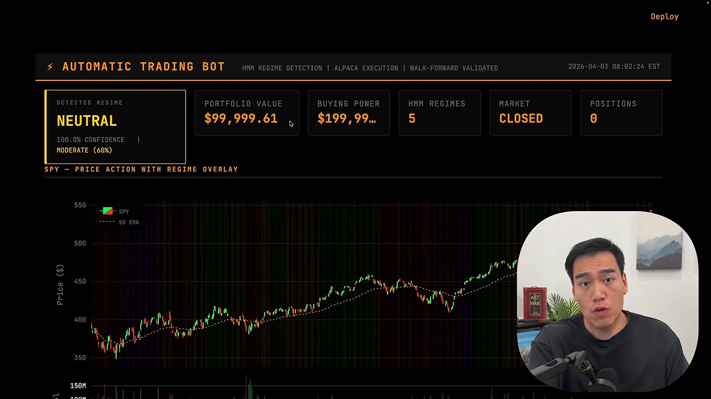
아래로 내려가면 표 세 개가 나와요. 왼쪽 'HMM LEARNED REGIMES'는 레짐마다 기대 수익(E[Ret])과 기대 변동성(E[Vol]), 투자 비중을 보여 줘요. CRASH 10%, BEAR 40%, NEUTRAL 60%, BULL과 EUPHORIA 95%예요. 가운데 'RISK CONTROLS'는 하루·한 주·고점 대비 손실 한도(3%, 7%, 10%)와 레버리지 한도 1.25배를 현재 값과 나란히 보여 줘요. 오른쪽 'SIGNAL FEED'는 봇이 낸 매매 기록이에요. 같은 SPY 매수라도 레짐이 EUPHORIA일 땐 비중 95%, BEAR일 땐 60%로 달라진 게 보여요.
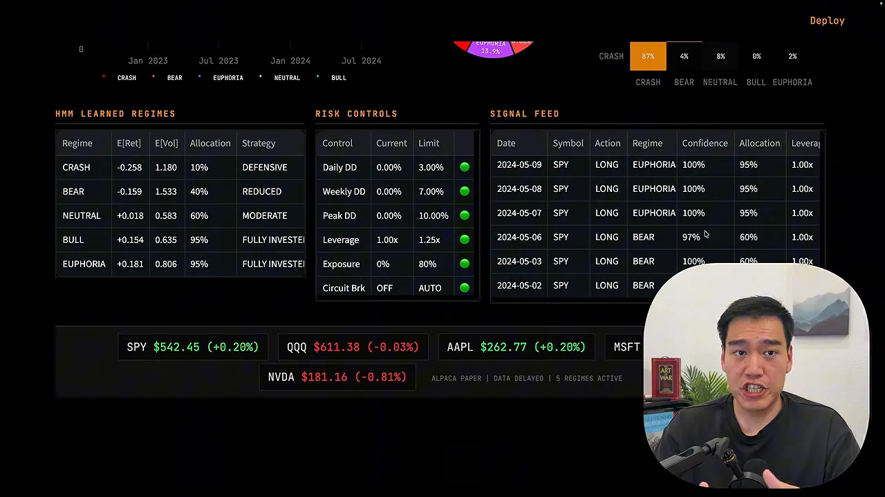
레짐은 다섯 가지예요. 폭락(crash), 약세(bear), 중립(neutral), 강세(bull), 과열(euphoria)이에요. 발표자는 이 대시보드까지 전부 Claude Code가 만들었고, 사람이 할 일은 프롬프트를 제대로 쓰고 코드 구조를 이해하는 것뿐이라고 해요.
다섯 부품과 만드는 순서
본격적으로 만들기 전에 시스템 전체를 다섯 부품으로 나눠요. 화이트보드에 왼쪽부터 Brain, Allocation, Safety, Broker, Dashboard 다섯 상자가 화살표로 이어져 있고, 상자마다 아래에 하는 일이 적혀 있어요.
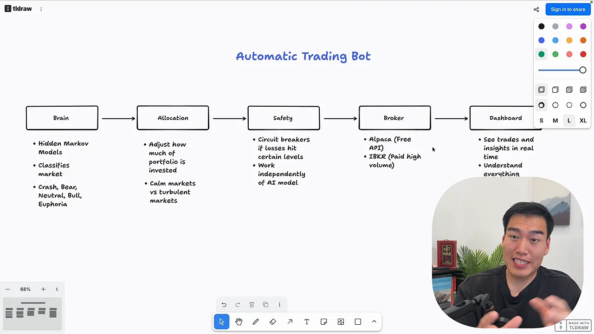
| 부품 | 하는 일 | 영상에서 강조한 점 |
|---|---|---|
| 두뇌 (Brain) | HMM이 가격과 거래량을 보고 시장을 다섯 레짐으로 분류해요 | 전략을 얹기 전에 지금이 어떤 시장인지부터 알아야 해요 |
| 배분 (Allocation) | 레짐에 따라 포트폴리오에 얼마나 투자할지 정해요 | 잔잔한 시장에선 많이, 거친 시장에선 적게 담아요 |
| 안전장치 (Safety) | 손실이 정한 수준에 닿으면 시스템을 멈춰요 | AI(Artificial Intelligence) 모델과 완전히 독립으로, 하드코딩해요 |
| 증권사 (Broker) | 실제 주문을 넣어요 | Alpaca는 무료 API, IBKR(Interactive Brokers)은 거래량이 클 때 쓰는 유료 선택지예요 |
| 대시보드 (Dashboard) | 모든 걸 실시간으로 보여 줘요 | 필수는 아니지만 시스템을 눈으로 확인하게 해 줘요 |
안전장치를 AI와 떼어 놓는 이유는 단순해요. 전략이 이론상 맞게 짜였더라도 실제로는 계속 돈을 잃을 수 있어요. 그때 전략과 상관없이 '여기서 그만'을 외칠 장치가 있어야 하루, 한 주 단위로 손실이 쌓이지 않아요.
만드는 순서
만드는 순서는 발표자가 정리해 둔 프롬프트 문서를 따라가요. 문서 첫 장 제목은 'Claude Code Prompt: HMM Regime-Based Trading Bot'이고, 맨 위에 '프롬프트를 한 번에 하나씩 넣고, 완료와 테스트를 확인한 뒤 다음으로 넘어가라'는 사용법이 적혀 있어요. 노란 형광 제목 PHASE 1이 프로젝트 뼈대예요.
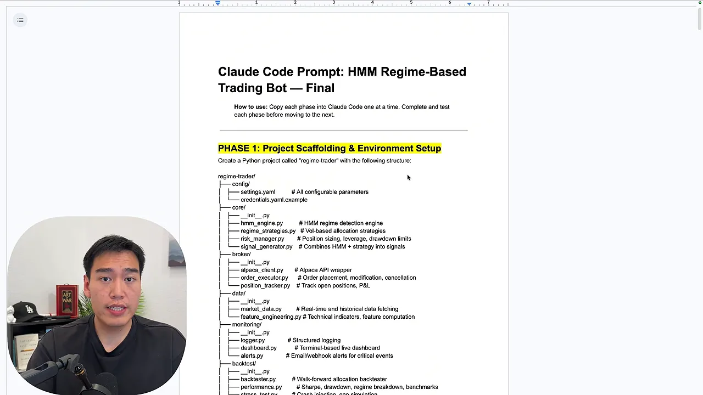
단계는 이 순서예요. 뼈대 → 레짐 감지 엔진(두뇌) → 변동성 기반 배분 전략 → 워크포워드 백테스트 → 리스크 관리 → Alpaca 연결 → 메인 루프 → 모니터링·대시보드예요. 증권사 연결이 백테스트와 리스크 관리 뒤에 온다는 점이 중요해요. 전략이 통하고 어느 정도 안전하다는 걸 확인한 다음에야 돈이 오가는 곳에 붙여요. 발표자는 누구나 쓸 수 있는 기본형을 주는 것이니, 종목과 전략은 바꾸되 핵심 로직은 유지하라고 해요.
개발 환경과 프로젝트 뼈대
작업 환경은 VS Code예요. 빈 폴더를 하나 열고, 확장 프로그램 검색에서 Claude Code를 찾아 설치해요. 화면 가운데에 Anthropic이 낸 'Claude Code for VS Code' 상세 페이지가 떠 있어요. 설치하면 오른쪽 패널에서 Claude Code와 대화할 수 있어요.
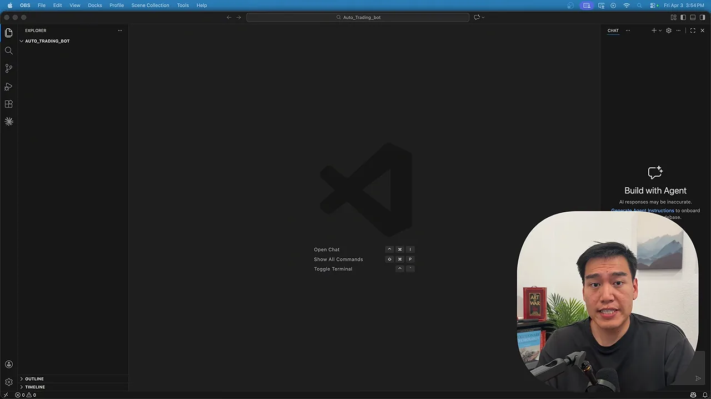
첫 프롬프트: 로직 없는 폴더 구조
첫 단계는 프로젝트 스캐폴딩이에요. 아직 로직은 하나도 넣지 않고, regime-trader라는 파이썬 프로젝트의 파일 구조만 만들게 해요. 프롬프트 입력창에 트리가 그대로 들어가 있어요. 화면에서 broker/ 아래 alpaca_client.py(Alpaca API 래퍼), order_executor.py(주문 넣기·수정·취소), position_tracker.py(열린 포지션 추적)가 보여요.
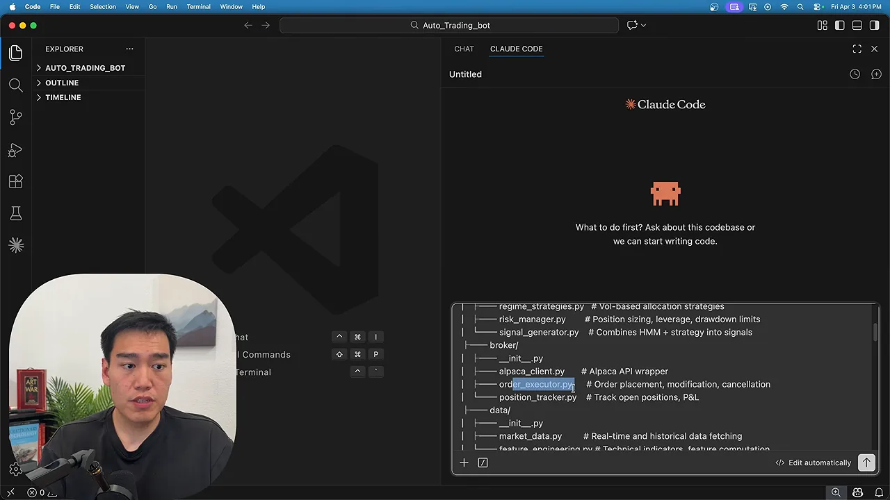
전체 구조는 이래요. config/에 설정과 인증 정보, core/에 HMM 엔진·레짐 전략·리스크 매니저·신호 생성, data/에 실시간·과거 시세와 피처 계산, monitoring/에 로그·대시보드·이메일과 웹훅 알림, backtest/에 백테스터·성과 분석·스트레스 테스트가 들어가요. tests/에는 룩어헤드 편향 확인, 전략, 리스크, 주문 테스트가 들어가고, 마지막으로 main.py, 의존성 목록, 인증 정보를 담을 .env가 있어요.
같은 프롬프트 아래쪽은 settings.yaml에 들어갈 파라미터를 나열해요. 화면 첫 줄 broker에는 모의 거래 여부와 종목 목록(SPY, QQQ, AAPL, MSFT, AMZN, GOOGL, NVDA, META, TSLA, AMD), 일봉 단위가 있어요. hmm 줄에는 레짐 후보 개수 [3, 4, 5, 6, 7], 안정성 기준 3봉, 깜빡임 판정 20봉 중 4회, 최소 신뢰도 0.55가 보여요. strategy와 risk 줄에는 뒤에서 다룰 비중과 손실 한도 숫자가 미리 들어가요. 종목을 바꾸고 싶으면 여기만 고치면 돼요.
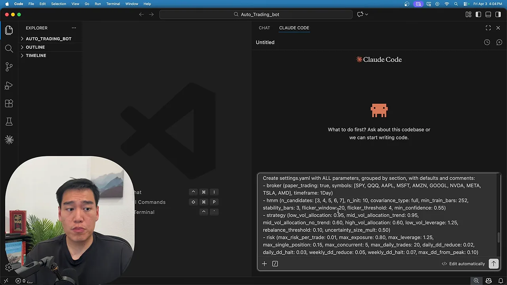
5분쯤 지나면 결과가 나와요. 응답 첫 줄이 'regime-trader 뼈대가 8개 폴더, 31개 파일로 완성됐다'고 말하고, 왼쪽 탐색기에 backtest, broker, config, core, data, monitoring, tests 폴더가 생겼어요. 마지막 줄은 '모든 메서드는 타입 힌트와 독스트링만 있고 로직은 아직 없다'예요.
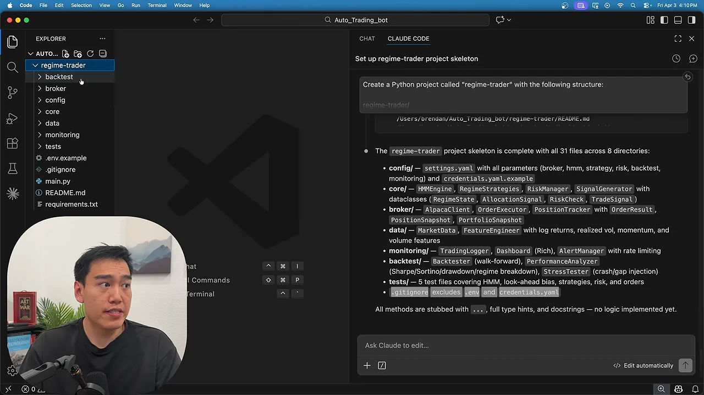
두뇌: HMM 레짐 감지 엔진
두 번째 단계는 봇의 두뇌예요. 발표자가 거듭 짚는 건 이 모델이 가격을 예측하지 않는다는 점이에요. 지금 시장이 잔잔한지, 거친지, 약세장인지 같은 '환경'을 분류해요. 환경을 알아야 노출을 줄이거나 전략을 바꿀 수 있어요. 프롬프트도 첫머리에 'HMM은 변동성 분류기'라고 못 박아요.
레짐 개수는 데이터가 고르게 해요
처음 대시보드의 레짐 5개는 사람이 정한 숫자가 아니에요. 프롬프트 1번 요구 사항을 보면, 학습할 때 레짐 개수 3, 4, 5, 6, 7을 모두 시험하고 후보마다 BIC를 계산해서 가장 낮은 모델을 고르라고 적혀 있어요. 화면에 공식 BIC = -2 * log_likelihood + n_params * log(n_samples)도 그대로 들어가 있어요.
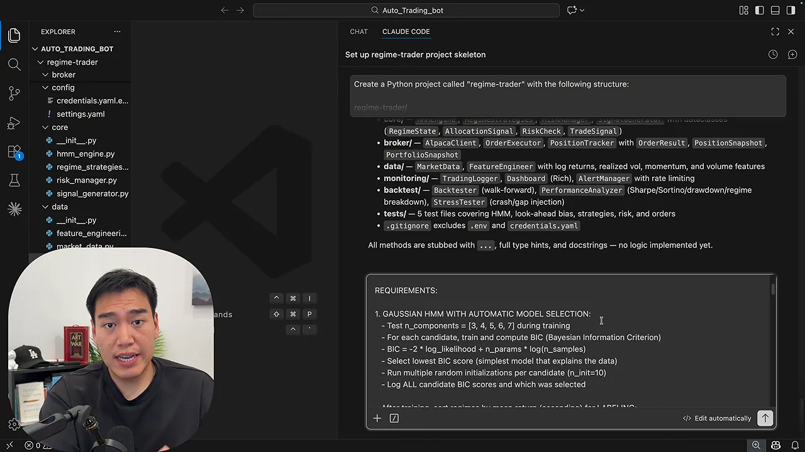
학습이 끝나면 레짐을 평균 수익률 순으로 정렬해 이름을 붙여요. 화면 목록을 보면 3개면 BEAR·NEUTRAL·BULL, 4개면 CRASH·BEAR·BULL·EUPHORIA, 5개면 CRASH·BEAR·NEUTRAL·BULL·EUPHORIA예요. 6~7개가 되면 STRONG_BEAR, WEAK_BULL처럼 강약을 붙여 나눠요. 학습 데이터는 약 2년치 일봉이에요.
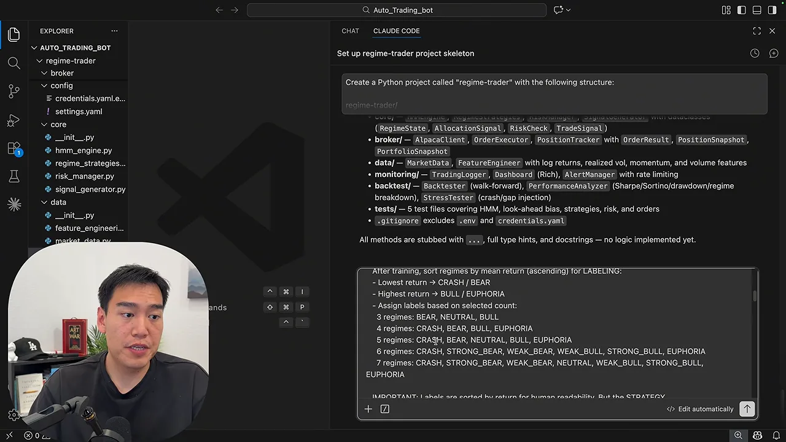
model.predict()를 쓰지 않는 이유
프롬프트 4번 'REGIME DETECTION — NO LOOK-AHEAD BIAS'에는 별표 세 개로 '가장 중요한 기술적 디테일'이라고 적혀 있어요. 내용은 이래요. model.predict()는 비터비 알고리즘으로 전체 시퀀스를 처리하면서 미래 데이터로 과거 상태까지 고쳐 써요. 그러면 백테스트가 비현실적으로 좋아지는 룩어헤드 편향이 생겨요. 그래서 포워드 알고리즘만 구현하라고 해요.
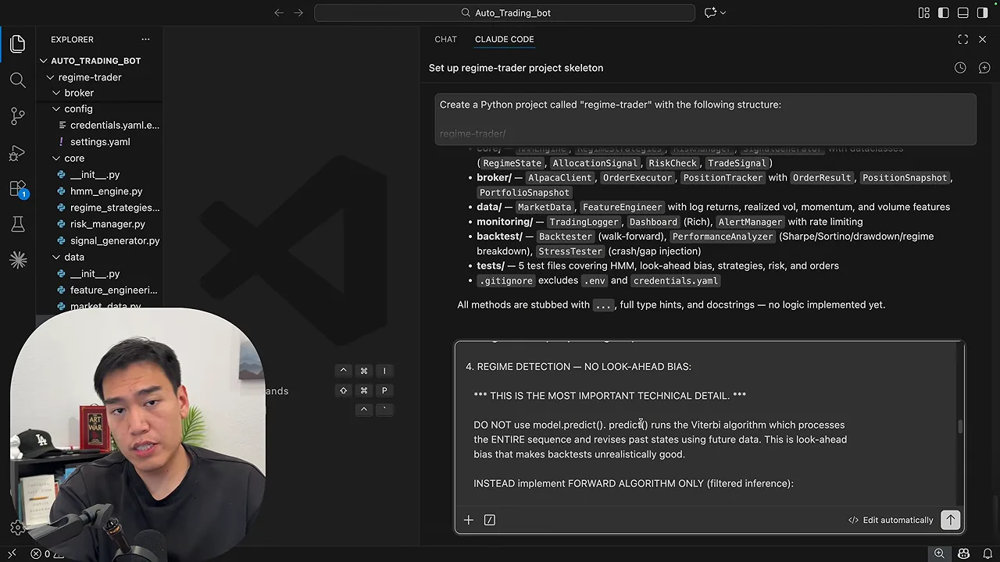
그림으로 보면 차이가 분명해요. 같은 날짜 T의 레짐을 물었을 때, 그날까지의 데이터만 준 경우와 100봉 뒤 데이터까지 준 경우의 답이 같아야 해요. 결과 화면의 핵심 테스트 test_no_look_ahead_bias가 바로 이걸 확인해요.
깜빡이는 신호는 걸러요
마지막으로 안정성 필터를 둬요. 새 레짐이 나와도 3봉 연속 유지되기 전에는 행동하지 않아요. 또 최근 20봉 안에서 레짐이 4번 넘게 바뀌면 강세·약세를 오가며 '깜빡이는' 상태로 보고, 경고 로그를 남기고 포지션 크기를 줄여요. 시장이 어느 레짐인지 불확실하다는 신호이기 때문이에요.
10분쯤 뒤 Claude Code가 피처 계산과 HMM 엔진 두 파일을 완성해요. 응답 아래쪽 'Tests — 22/22 passing'에 HMM 테스트 15개와 룩어헤드 편향 테스트 7개가 나뉘어 적혀 있어요.
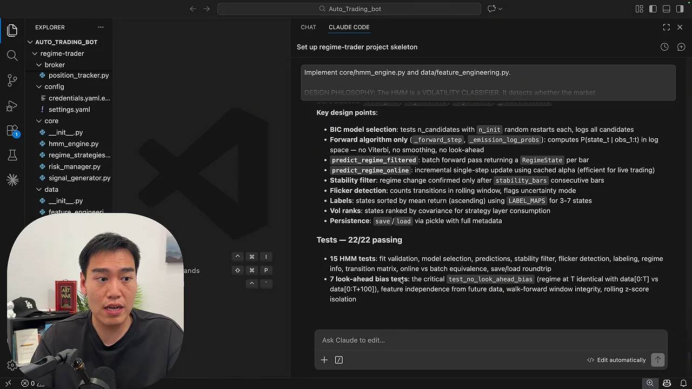
배분 전략: 변동성에 따라 비중 바꾸기
세 번째 단계는 레짐에 따라 '얼마나 담을지'를 정하는 배분 전략이에요. 프롬프트의 설계 메모는 HMM이 변동성 환경을 잘 잡아낸다는 데서 출발해요. 그래서 잔잔하면 거의 다 투자하고, 중간이면 추세가 살아 있을 때만 유지하고, 거칠면 비중을 줄여요.
화면에는 'THREE STRATEGY CLASSES' 아래 첫 번째 전략이 보여요. 변동성이 가장 낮은 1/3 레짐에 쓰는 LowVolBullStrategy예요. 방향은 매수, 비중 95%, 레버리지 1.25배, 손절은 '현재가 − 3 ATR'과 '50일 EMA − 0.5 ATR' 중 높은 값이에요. 마지막 줄에는 '수익 대부분이 여기서 나온다. 잔잔한 시장 + 레버리지 = 복리'라고 적혀 있어요.
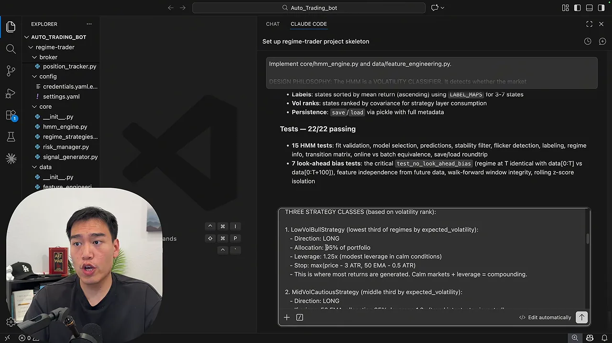
프롬프트 다음 부분이 이 단계에서 가장 눈여겨볼 곳이에요. 레짐마다 기대 변동성으로 순위를 매겨 전략을 고르는데, 이 정렬은 이름표 정렬(수익률 기준)과 독립이라고 적혀 있어요. 화면 문장 그대로 '"BULL"이라는 이름이 저변동을 뜻하지 않는다. 오케스트레이터는 이름을 무시한다'예요. 그 아래 'CONFIDENCE AND UNCERTAINTY'에는 최소 신뢰도 0.55와, 그보다 낮거나 레짐이 깜빡이면 모든 크기를 절반으로 줄이고 레버리지를 1배로 묶는 불확실 모드가 있어요.
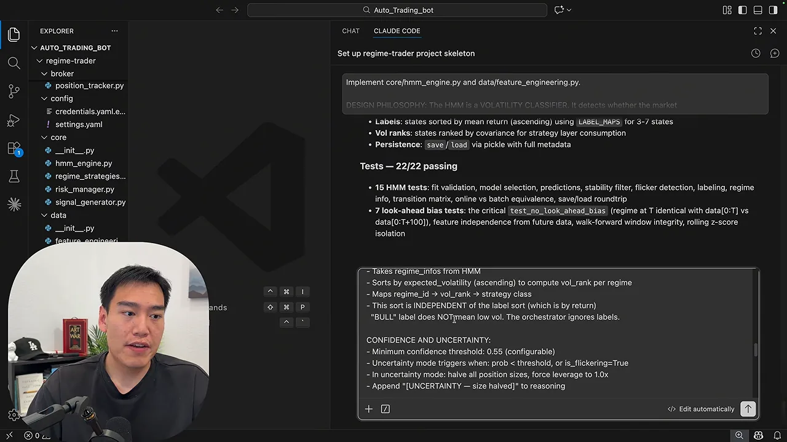
구현이 끝나면 Claude Code가 세 전략을 표로 정리해 보여 줘요. 아래 표는 영상 화면과 프롬프트에 나온 값을 옮긴 거예요.
| 전략 | 변동성 순위 | 비중 | 레버리지 | 손절 |
|---|---|---|---|---|
| LowVolBull (저변동 강세) | 0.33 이하 | 95% | 1.25배 | 현재가 − 3 ATR(Average True Range)과 50일 EMA(Exponential Moving Average) − 0.5 ATR 중 높은 값 |
| MidVolCautious (중변동 신중) | 0.34~0.66 | 50일 EMA 위면 95%, 아래면 60% | 1.0배 | 50일 EMA − 0.5 ATR |
| HighVolDefensive (고변동 방어) | 0.67 이상 | 60% | 1.0배 | 50일 EMA − 1.0 ATR (넓게) |
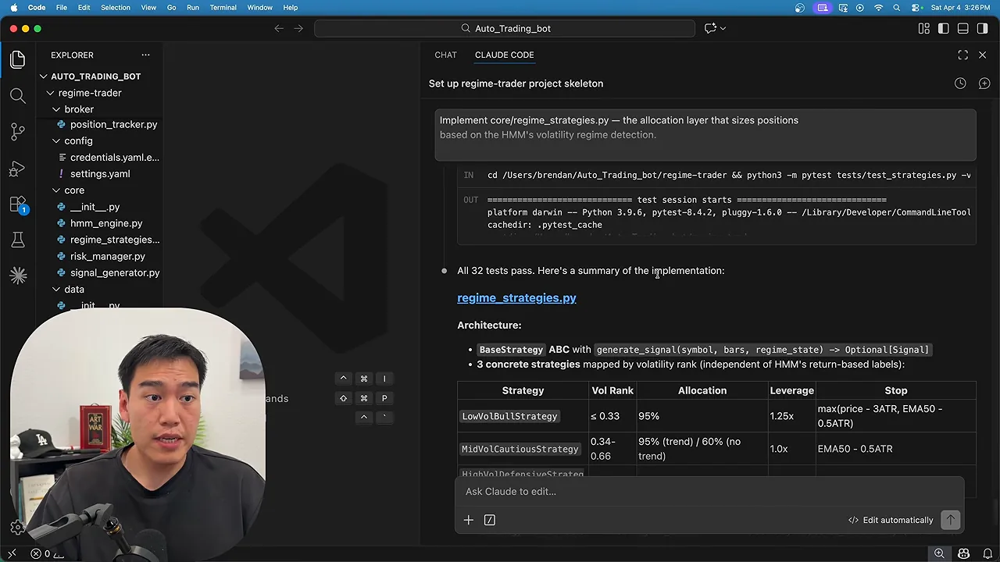
발표자는 이 표를 그대로 쓰라고 하지 않아요. 저변동장에서 더 공격적으로 갈 수도 있고, 중변동장에 다른 필터를 둘 수도 있어요. 자기 위험 성향과 종목에 맞게 이 부분을 통째로 바꾸고, 다음 단계의 백테스트와 오가며 다듬는 게 이 작업에서 가장 시간이 많이 드는 부분이라고 해요. 목표 비중이 현재보다 10% 넘게 달라질 때만 리밸런싱하는 규칙도 들어 있어요.
워크포워드 백테스트로 검증하기
네 번째 단계는 방금 넣은 전략이 정말 통하는지 확인하는 백테스트예요. 발표자는 흔한 백테스트의 함정을 먼저 짚어요. 전체 데이터를 다 본 뒤 가장 좋은 설정을 찾고, 그 설정이 미래를 맞힌 것처럼 꾸미는 방식이에요. 워크포워드는 창을 굴려 가며 모델이 본 적 없는 구간에서만 성적을 매겨요.
PHASE 4 문서의 'Rolling windows'를 보면 숫자가 정확히 나와 있어요. 학습 구간 252거래일(1년)에서 HMM을 학습하고 레짐 개수를 고르고, 평가 구간 126거래일(6개월)로 성적을 매기고, 126거래일씩 밀어요. 평가 구간은 한 봉씩 걸으면서 그 봉까지의 데이터로만 피처를 계산하고, 포워드 알고리즘으로 레짐을 판단하고, 목표 비중이 10% 넘게 바뀌면 리밸런싱해요.
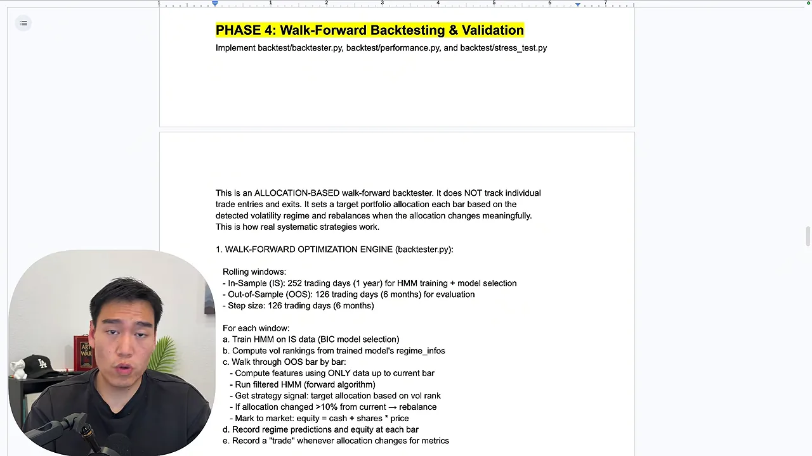
창이 움직이는 모양을 그려 보면 이래요. 회색 학습 구간 다음에 오는 색칠된 평가 구간만 성적표에 들어가고, 평가 구간끼리는 겹치지 않고 이어져요.
현실감을 위해 리밸런싱마다 슬리피지를 넣고, 신호가 나온 다음 봉 시가에 체결된다고 가정해요. 수수료는 0달러로 두는데, 문서는 Alpaca가 수수료가 없기 때문이라고 적어요.
무엇으로 성적을 매기나요
성과 지표는 'Core' 목록에 모여 있어요. 총수익과 연복리 수익률, 샤프 지수와 소르티노 지수, 칼마 지수, 최대 드로다운의 크기와 기간, 승률, 거래 수예요. 그 아래 'Regime-specific'은 레짐별로 시간 비중·수익 기여·샤프를 나눠 보여 주고, 'Confidence-bucketed'는 신뢰도 50% 미만, 50~60%, 60~70%, 70% 이상으로 나눠 봐요. 문서 문장대로 신뢰도 높은 거래가 낮은 거래보다 잘했다면 HMM이 쓸모 있다는 뜻이에요.
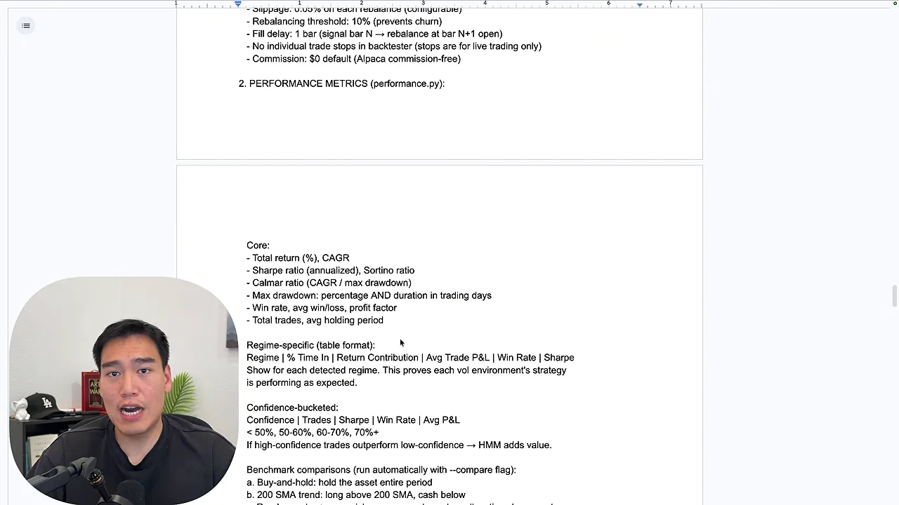
비교 기준은 세 가지예요. 같은 기간 그냥 들고 있기(buy and hold), 가격이 200일 SMA 위면 보유하고 아래면 현금으로 두는 추세 추종, 그리고 같은 리스크 규칙에 비중만 무작위로 바꾸는 전략이에요. 무작위 전략보다 낫지 않다면 HMM이 한 일이 없는 거예요.
결과 화면의 stress_test.py 설명에는 세 가지 스트레스 범주가 있어요. 가벼운 급락(-5% 10번)부터 심한 급락(-15% 5번)까지 일곱 가지 폭락 주입, 밤사이 2배·5배 ATR 갭 하락, 그리고 레짐을 일부러 잘못 분류해서 리스크 관리가 독립적으로 버티는지 보는 시험이에요. 마지막 줄에 70개 테스트가 모두 통과했다고 나와요.
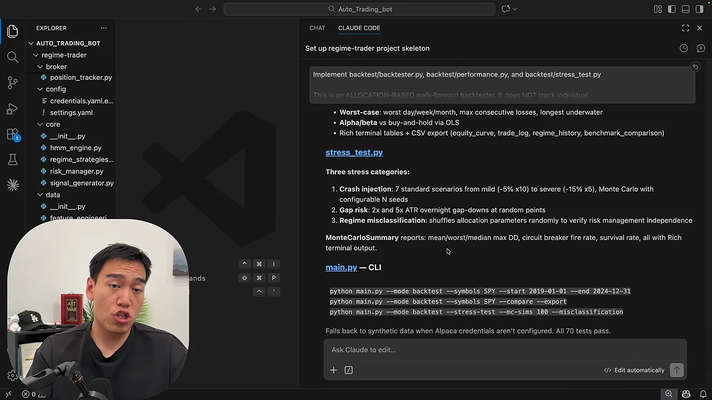
발표자는 이 단계가 가장 오래 걸린다고 해요. 성적이 좋지 않으면 전략으로 돌아가 고치고, 스트레스 테스트와 벤치마크 비교를 모두 넘을 때까지 Claude Code와 여러 번 주고받아야 해요.
리스크 관리: 모든 신호에 거부권
백테스트를 통과했다면 다음은 최악의 경우 시스템을 멈추는 층이에요. 발표자는 이게 전체에서 가장 중요하고, HMM보다도 중요하다고 말해요.
A mediocre strategy with a great risk management layer only loses money a little bit.
평범한 전략이라도 리스크 관리가 훌륭하면 조금만 잃어요.
— 영상 21:54
PHASE 5 문서 첫 문단이 원칙을 정해요. 리스크 매니저는 HMM과 독립으로 돌고, HMM이 완전히 실패해도 실제 손익 기준으로 손실을 잡아내며, 어떤 신호에도 '절대적 거부권'을 가진다고요. 그 아래 '2. CIRCUIT BREAKERS'가 손실 단계별 조치예요.
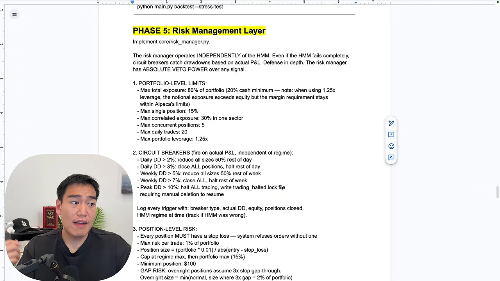
| 조건 | 조치 |
|---|---|
| 하루 손실 2% 초과 | 그날 남은 시간 모든 크기 50% 축소 |
| 하루 손실 3% 초과 | 모든 포지션 청산, 그날 거래 중지 |
| 한 주 손실 5% 초과 | 그 주 남은 기간 모든 크기 50% 축소 |
| 한 주 손실 7% 초과 | 모두 청산, 그 주 거래 중지 |
| 고점 대비 10% 하락 | 모든 거래 중지, trading_halted.lock 파일 생성. 직접 지워야 재개 |
마지막 줄은 일부러 그렇게 만든 거예요. 고점 대비 10%는 계좌에 큰 타격이에요. 봇이 알아서 다시 켜지면 같은 실수를 반복할 수 있어요. 잠금 파일을 사람이 지워야만 재개되니, 무슨 일이 있었는지 들여다보고 이 전략을 계속 믿을지 의식적으로 결정하게 돼요.
아래 도구로 손실 수준을 바꿔 보면 어느 규칙이 먼저 걸리는지 볼 수 있어요. 규칙과 숫자는 위 표 그대로예요.
조치: 정상 거래
포지션 크기 100%
- 오늘 손실을 2.5%로 올려 보세요. 크기만 절반이 되고 거래는 계속돼요.
- 오늘 손실은 1%로 두고 이번 주 손실을 7.5%로 올려 보세요. 하루 기준으로는 괜찮아도 주간 규칙이 모두 청산해요.
- 고점 대비 하락을 10.5%로 올려 보세요. 다른 값과 상관없이 잠금 파일이 생기고 사람이 지울 때까지 멈춰요.
포지션 단위의 규칙
서킷 브레이커가 계좌 전체를 지킨다면, 포지션 규칙은 주문 하나하나를 지켜요. 모든 주문에 손절가가 있어야 하고, 없으면 시스템이 주문을 거부해요. 한 거래에서 잃을 수 있는 금액은 포트폴리오의 1%예요. 그래서 크기는 '포트폴리오 × 0.01 ÷ (진입가 − 손절가)'로 정하고, 한 종목 최대 15%로 다시 묶어요.
문서 다음 장에는 레버리지, 주문 검증, 상관관계 규칙이 이어져요. 레버리지는 기본 1배이고, 저변동 레짐에서만 1.25배까지 써요. 레짐이 불확실하거나, 서킷 브레이커가 하나라도 켜졌거나, 포지션이 3개 이상이거나, 깜빡임이 잦으면 1배로 강제해요. 상관관계 검사는 새 포지션이 기존 포지션과 60일 상관계수 0.7을 넘으면 크기를 절반으로, 0.85를 넘으면 거래를 거부해요. 같은 종류의 베팅을 겹쳐 쌓지 않으려는 장치예요.
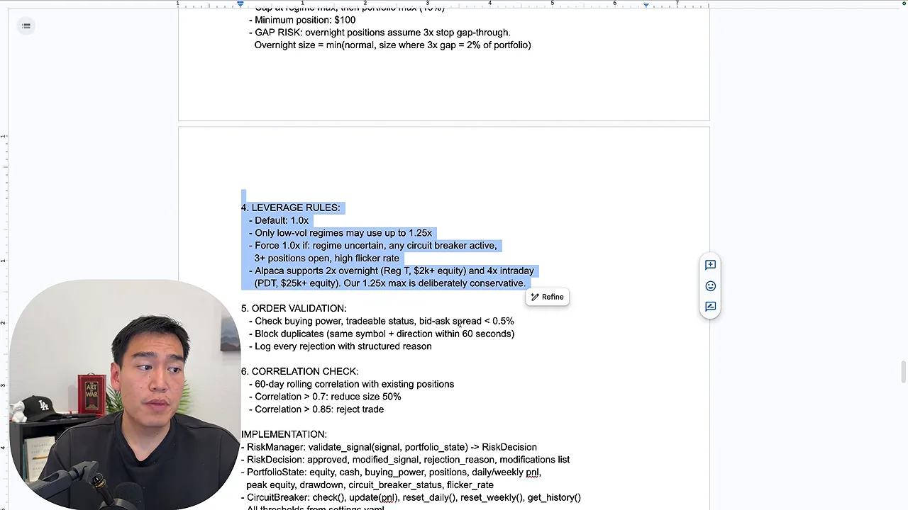
리스크 매니저 구현이 끝난 뒤 발표자는 처음의 화이트보드로 돌아와요. 왼쪽 세 칸인 두뇌(Brain), 배분(Allocation), 안전장치(Safety)가 끝났다는 뜻이에요. 핵심 엔진은 다 만들었고, 남은 건 증권사에 연결해 실제로 주문을 보내는 일이에요.
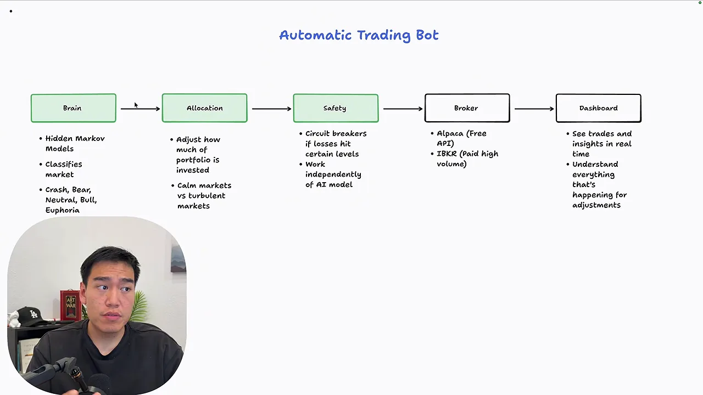
Alpaca 증권사 연결
이제 핵심 엔진을 증권사에 붙여요. 증권사가 연결되면 시스템이 낸 결정이 사람 손을 거치지 않고 주문으로 나가요. 그래서 '완전 자동'이에요.
Alpaca 가입과 모의 계좌
alpaca.markets에서 Trading API로 가입하면 자동으로 모의(페이퍼) 계좌에 들어가요. 주식, 옵션, 암호화폐를 자동으로 거래할 수 있고 선물은 안 돼요. 화면 맨 위 파란 띠에 '페이퍼 트레이딩 중이라 실제 돈은 쓰이지 않는다'는 안내가 있고, 오른쪽 위에 실계좌를 여는 'Open Live Account' 버튼이 있어요.
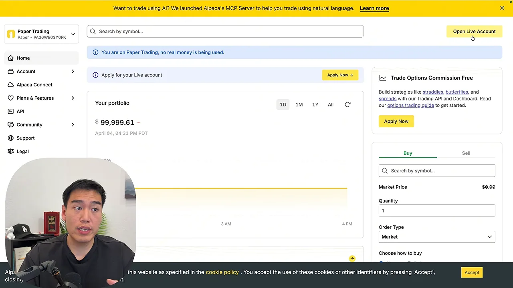
키는 Claude에게 보여 주지 않아요
계좌 화면을 내리면 API Keys 칸이 있어요. 여기서 엔드포인트(기본 URL(Uniform Resource Locator)), API 키, 시크릿 키 세 가지를 복사해요. 키는 누구와도 공유하지 않고, 발표자도 촬영 뒤 다시 발급하겠다고 해요. 특히 이 단계는 Claude에게 맡기지 않아요. 민감한 정보를 채팅에 붙여 넣지 않기 위해서예요. 이 문서도 키가 보이는 화면은 싣지 않았어요.
준비는 첫 프롬프트에서 이미 끝나 있어요. 왼쪽에 열린 .gitignore 첫 줄이 .env예요. 저장소를 공개해도 .env는 올라가지 않아요. .env.example에는 ALPACA_API_KEY, ALPACA_SECRET_KEY, ALPACA_PAPER=true 자리가 마련돼 있어요. 새 .env 파일을 만들어 이 내용을 붙이고 두 키만 직접 채워요. 기본 URL은 비밀이 아니라 채팅에 적어도 돼요.
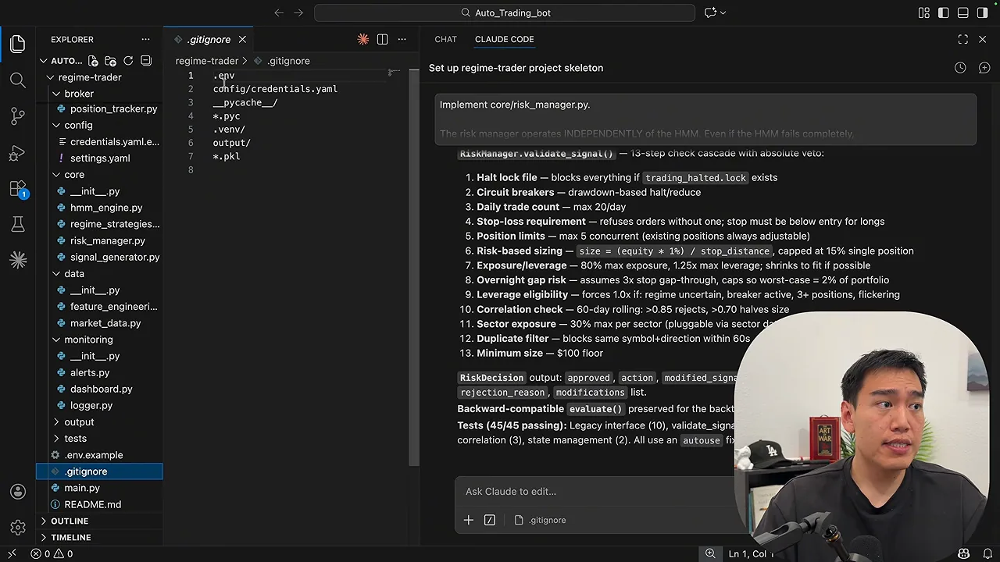
브로커 프롬프트와 연결 확인
PHASE 6 프롬프트는 broker/ 패키지를 채워요. 화면 첫 항목 alpaca_client.py를 보면, 공식 파이썬 SDK(Software Development Kit)인 alpaca-py를 감싸고, 인증 정보는 .env에서만 읽으며(절대 하드코딩하지 않음), 기본은 모의 주소예요. 실계좌 모드로 바꾸려면 'YES I UNDERSTAND THE RISKS'를 직접 입력해야 한다는 확인 장치도 있어요. 그 아래 order_executor.py는 주문 제출·취소·손절가 수정을 맡아요.
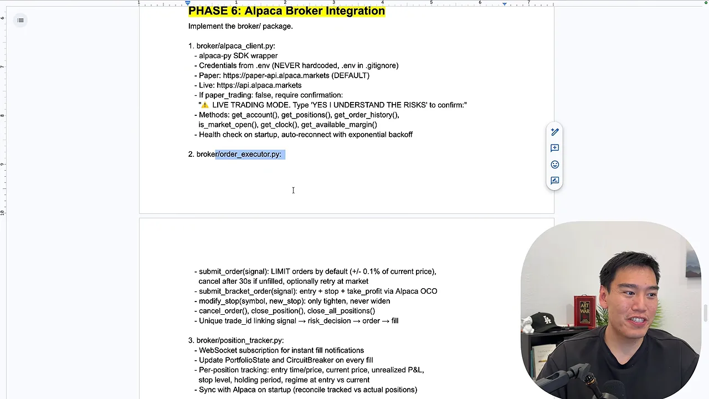
구현이 끝나면 연결을 확인해 달라고 하고, 엔비디아 테스트 매수를 넣어 보라고 해요. 선택된 응답 문장이 '연결됐고, 약 10만 달러 모의 자산으로 계좌가 활성 상태이며, 주말이라 장은 닫혔지만 모의 거래는 주문을 대기열에 넣을 수 있다'예요. 아래 Bash 출력에 'TEST TRADE PLACED'와 주문 ID(Identifier), 종목 NVDA가 찍혀요.
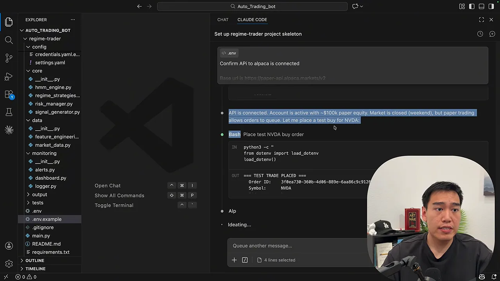
.env를 읽어 키를 쓰기 때문에 채팅에는 키가 한 번도 나오지 않아요. 영상 28:49에서 보기Alpaca 화면의 최근 주문 목록 맨 위에서 같은 주문을 찾을 수 있어요. 상태 칸이 accepted이고, 제출 시각은 Apr 04, 2026 04:47 PM이에요. 아래 줄의 canceled 주문들은 이전에 넣었다 취소한 것들이에요.
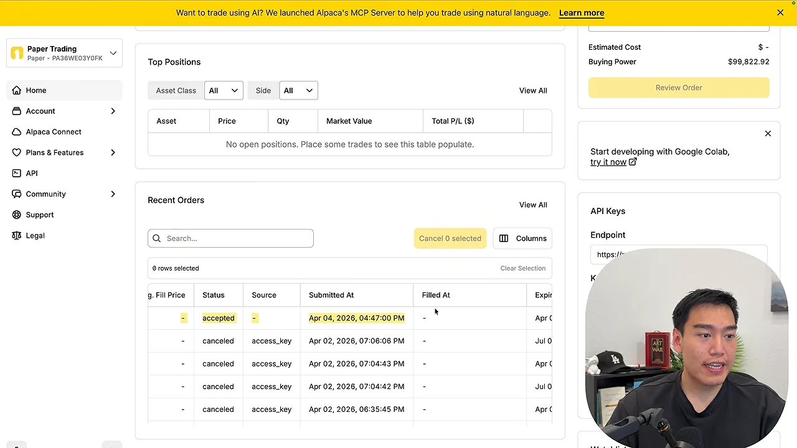
메인 루프와 대시보드로 마무리
부품이 다 모였으니 PHASE 7에서 main.py가 전부를 잇게 해요. 화면 문서는 시작(STARTUP) 여덟 단계와 메인 루프(MAIN LOOP) 일곱 단계로 나뉘어 있어요. 시작할 때는 설정을 읽고 Alpaca에 접속해 계좌를 확인하고, 장 시간을 보고, HMM을 불러오거나(7일이 넘었거나 없으면 다시 학습), 리스크 매니저와 포지션 추적기를 현재 계좌로 맞추고, 실시간 데이터 수신을 시작해요.
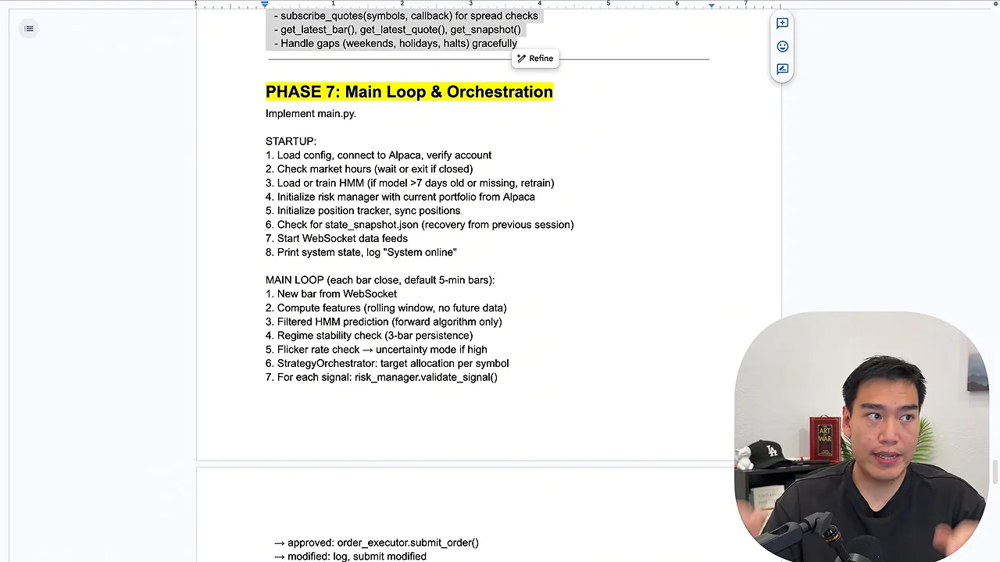
메인 루프는 봉이 닫힐 때마다(기본 5분봉) 한 바퀴 돌아요. 흐름을 그리면 이래요.
flowchart LR A["새 봉 수신"] --> B["피처 계산
(미래 데이터 없음)"] --> C["HMM 판단
(포워드 알고리즘)"] --> D["안정성 확인
(3봉 지속)"] --> E["깜빡임 확인
(높으면 불확실 모드)"] --> F["전략이 목표 비중 계산"] --> G{"리스크 매니저 검증"} G -->|승인| H["주문 제출"] G -->|수정| I["수정해서 제출"] G -->|거부| J["이유 기록"]
문서 다음 장에는 종료와 오류 처리가 있어요. 종료 신호를 받으면 연결을 닫되 포지션은 청산하지 않고(손절 주문은 그대로 둠) 상태를 저장해요. Alpaca API 오류는 세 번까지 간격을 늘려 가며 재시도하고, HMM 오류가 나면 마지막 레짐을 유지하고, 데이터가 끊기면 신규 진입을 멈추고 손절은 유지해요. 발표자는 상대편 서버가 죽든 내 쪽 모델이 실패하든 엔진이 멈추지 않게 하려는 장치라고 해요.
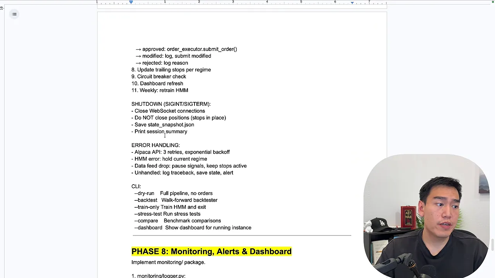
프롬프트를 넣고 기다리면 Claude Code가 'All 134 tests pass'와 함께 main.py 사용법을 정리해 줘요. 실거래·모의 거래, 주문 없이 전체 흐름만 도는 --dry-run, 백테스트, 학습만 하기, 대시보드 띄우기를 명령 한 줄씩으로 고를 수 있어요.
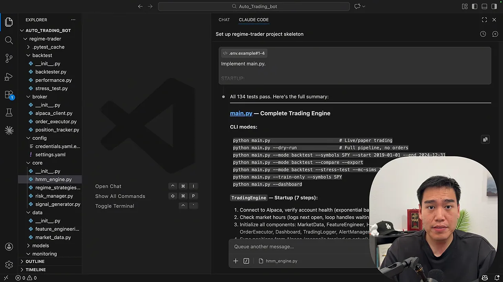
대시보드
그래도 눈으로 보는 걸 권해요. 모니터링·알림 프롬프트를 넣고, 시각적인 화면을 원하면 'Streamlit 대시보드로 UI를 만들어 줘'라고 한 줄 덧붙여요. 의존성 설치까지 시키면 브라우저에서 열 수 있어요. 완성 화면 맨 위에 모드 PAPER, 평가액과 현금 99,999.61달러, 장 CLOSED가 있어요. 그 아래 'Regime Detection'은 BEAR 레짐, 신뢰도 100%, 27봉째 유지 중(CONFIRMED)을 보여 주고, 오른쪽 'Risk Status'는 일간·고점 대비 손실과 레버리지를 한도와 함께 보여 줘요.
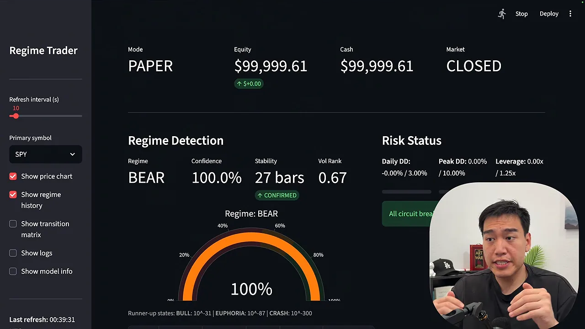
조금 내리면 레짐 표가 보여요. 여기서 하나 눈여겨볼 점이 있어요. 이 화면의 HMM은 레짐을 BEAR, CRASH, EUPHORIA, BULL 네 개로 골랐어요. 처음 대시보드의 다섯 개와 달라요. 레짐 개수를 BIC가 고르게 했으니, 학습 데이터가 바뀌면 개수도 바뀔 수 있다는 걸 보여 줘요. 표의 Strategy 칸도 BULL만 aggressive(1.25배)이고 나머지는 defensive이거나 moderate예요.
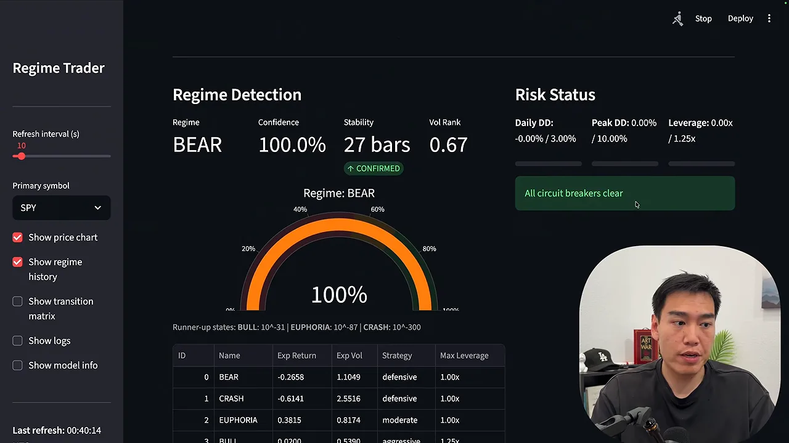
'Regime History'는 최근 200봉 동안 레짐이 어떻게 바뀌었는지 점으로 찍어요. 아래 표를 보면 BULL이 221봉(60.2%)으로 가장 길었고, BEAR 65봉(17.7%), EUPHORIA 50봉(13.6%), CRASH 31봉(8.4%)이에요.
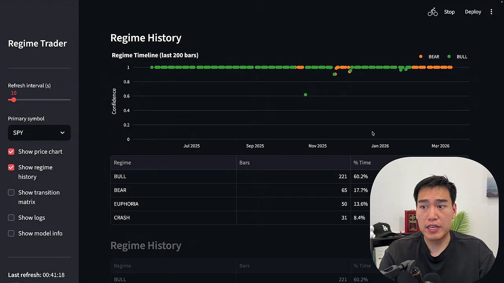
발표자의 마무리 조언
- 최소 한 달은 모의 거래해요. 봇이 왜 리밸런싱했는지, 왜 가만히 있었는지, 리스크 매니저가 언제 막았는지 하나하나 봐요.
- 비중 숫자는 갈아 끼울 수 있게 만들어 뒀어요. 여러 종목과 기간으로 백테스트하면서 배분 파라미터와 전략을 고쳐 가요.
- 수정은 Claude Code에 맡겨요. 파일마다 문서와 README가 남아 있어서 코드베이스를 잘 알고 있어요.
마지막 화면은 Claude Code가 만든 README예요. 맨 위 설명이 'HMM 기반 시장 레짐 감지와 변동성 적응형 배분 시스템, Alpaca로 동작'이고, 아래에 폴더별 역할과 빠른 시작 방법이 정리돼 있어요. 오른쪽에서는 발표자가 대시보드 게이지 모양을 두고 Claude와 주고받는 중이에요. 이런 자잘한 수정도 대화로 해결한다는 걸 보여 줘요.
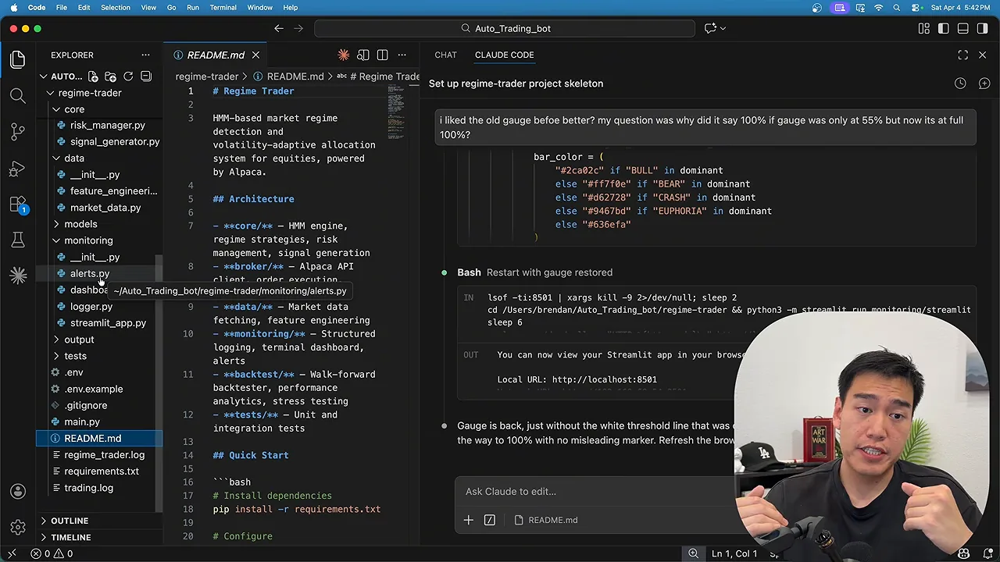